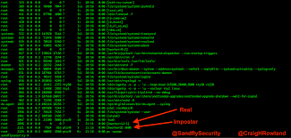

If Microsoft ever does
applications for Linux
it means I've won.
Linus Torvalds
|
Linus Torvalds jokes that he was named after the Peanuts character Linus but it is said that he was really named after the Nobel winning chemist Linus Pauling. Linus was interested in computers from a very early age. He began programming on his grandfather's Commodore Vic 20 when he was only 10 years old. Software was hard to get in Finland so Linus began programming his own games. |
|  | Linus attended the University of Helsinki in the computer science program eventually obtaining his Masters degree. His studies were interrupted to serve in the Finnish Navy as part of the country's mandatory service. He achieved the rank of second lietenant. While in university he got to use the Unix operating system on the university computers. He wrote his Master's thesis on Linux. |
 |
After university, Linus found the MS DOS operating system lacking after his experience on the Unix operating system. However, he did not have enough money to buy Unix so he decided to build his own version of Unix which he named Linux. Linus shared the source code and allowed others to download it for free. Because of their access to the source code, many programmers helped Torvalds retool revise the software, and by 1994 the Linux kernel (original code) version 1.0 was released. Linux as an inexpensive alternative to Windows. In addition to Linux being free, its source code can be viewed and freely modified by anyone, unlike a proprietary OS. |
For more info on Linus Torvalds, click here